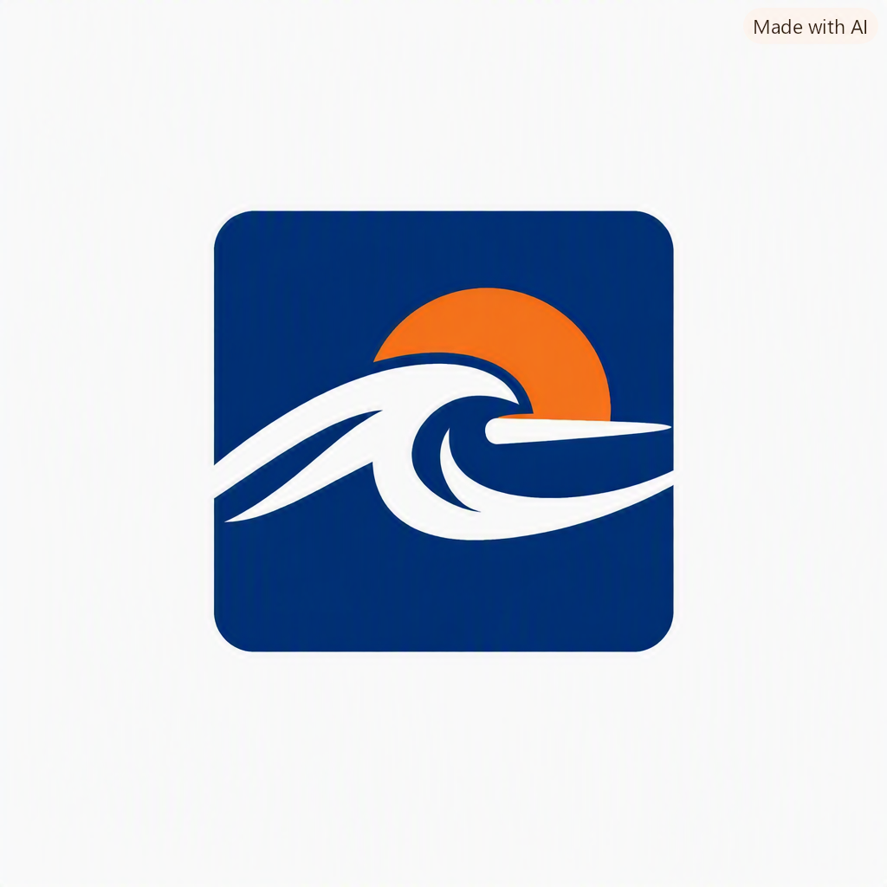

Paddle Surf
Viento suave, oleaje corto y buena visibilidad.
Viento, oleaje, visibilidad y viento offshore.
Marine MonitorCosta mediterránea · Previsión marina
Descubre las mejores ventanas meteorológicas para tus actividades acuáticas.
Diseñado para explorar y disfrutar del Mediterráneo con más información.
El viento, el oleaje y la orientación de la costa pueden transformar una jornada.
Ver las funcionalidades del dashboardCómo funciona el motor de evaluación.
Ilustración sin datos reales.
Las recomendaciones son orientativas y dependen de la disponibilidad y calidad de los datos.
Cada deporte tiene sus propios factores. Los criterios son orientativos.
Viento suave, oleaje corto y buena visibilidad.
Viento, oleaje, visibilidad y viento offshore.Viento sostenido para planear.
Viento, oleaje, visibilidad y viento offshore.Viento constante y espacio libre.
Viento, oleaje y visibilidad.Mar en calma y superficie tranquila.
Viento y oleaje. La claridad del agua no se mide aquí.Agua tranquila y poco oleaje.
Viento, oleaje y visibilidad.Agua plana y viento estable.
Viento y oleaje.Organiza tus rutas, guarda tus caladeros favoritos y consulta los puntos compartidos por la comunidad autorizada.
Punto de salida, enlace a Google Maps y notas de acceso.
Caladeros guardados y condiciones preferidas.
Las rutas no son navegación certificada. No garantizamos que los puntos de salida estén autorizados o sean seguros.
Previsión meteorológica y marina.
Evaluación adaptada a cada actividad.
Comparación de franjas horarias.
Playas y puntos de salida.
Rutas personales y compartidas.
Interfaz en español e inglés.
Prueba en versión Beta gratis por tiempo limitado
Solicita acceso y descubre una nueva forma de consultar las condiciones del Mediterráneo.
-
Selecciona una playa para ver los datos meteorológicos
-
Ordenadas por estado y por cercanía al centro del rango ideal de viento. Es orientativo: una buena puntuación no garantiza la seguridad.
| Hora | Viento | Direc. | Oleaje | Periodo | Precip. | Visib. | Estado |
|---|
Guarda calas y accesos desde los que sales. Se guardan en este navegador y en este dispositivo.